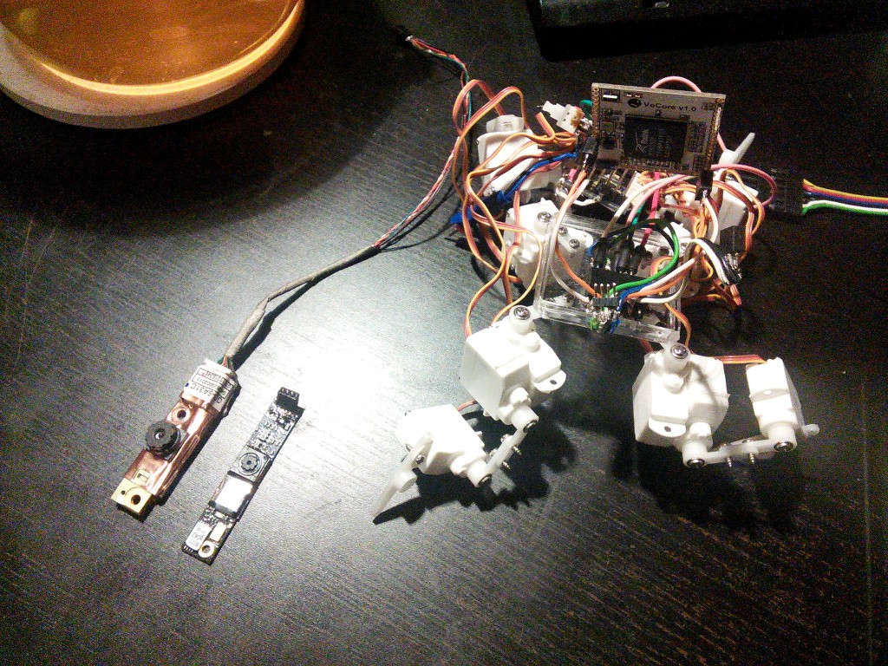

New Camera¶
Published on 2014-12-05 in Pico-Kubik quadruped robot.
I decided to get the mjpg streaming working by using a different camera module. This one comes from an Asus laptop and is called MT9M112. The cables didn’t take long to figure out: the black and brown are VCC, the silver and green are GND, and the orange and red are USB+ and USB-, respectively. The camera needs the gspca_stk1135 kernel driver, which means that I will have to compile a new kernel for VoCore again.
The first surprise – the OpenWRT’s menuconfig command doesn’t let me choose the gspca_stk1135 module. I suppose it’s a recent addition, and needs to be enabled manually. We’ll see if it works on this architecture at all.
Second surprise – I forgot that flashing OpenWRT image resets the root password to “unset”, and since I disabled the serial console to be able to use the serial for the servo controller, I have no way to log in. Now I have to flash a new image using the slow method, over kermit.
At least the camera is slightly shorter, so it will fit better on the front of the robot.
UPDATE: Nope, the new camera doesn’t support mjpg either, and the YUV mode also segfaults with it.